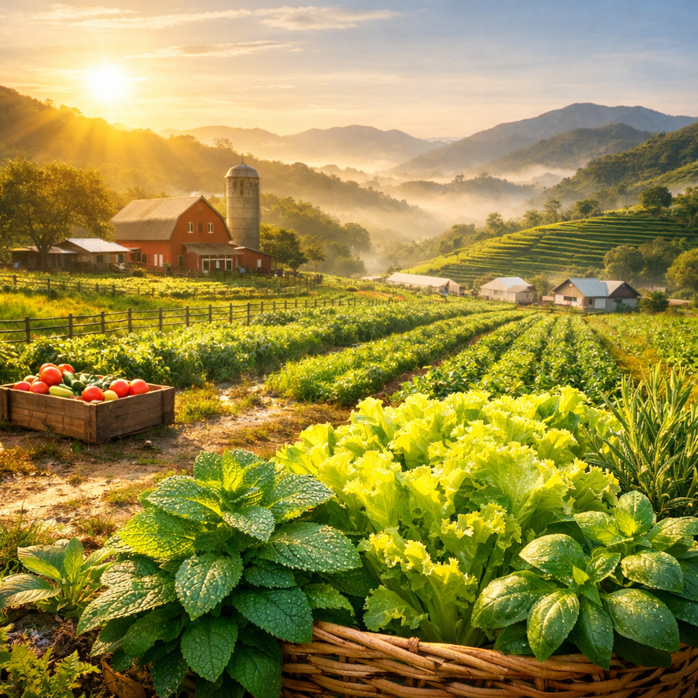
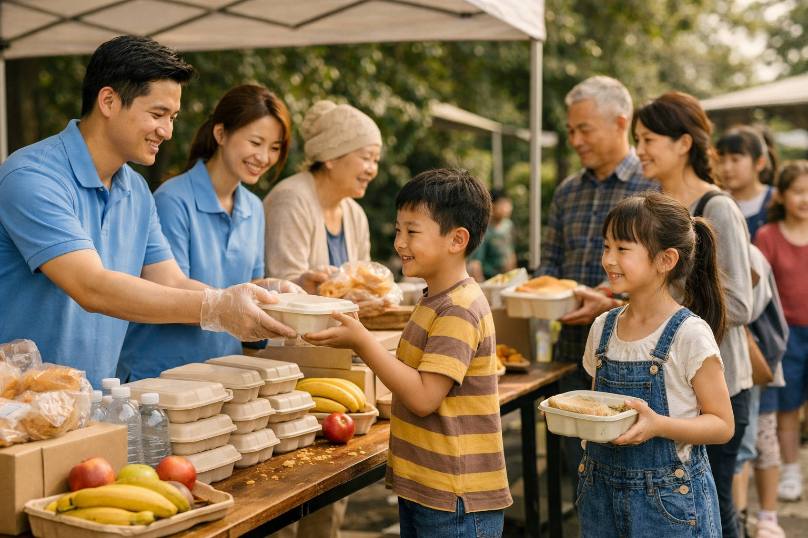
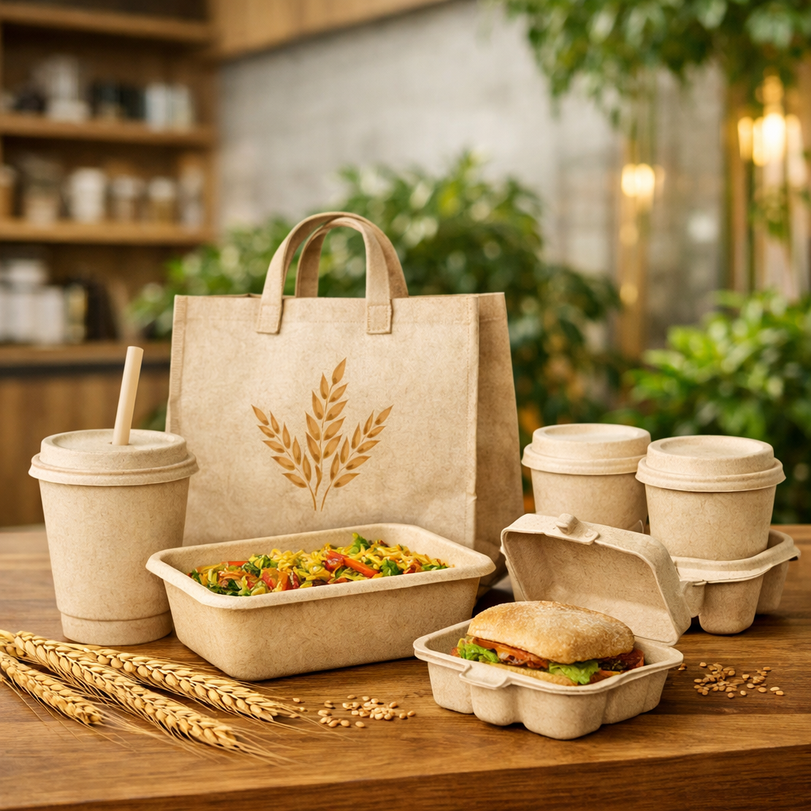

Sovereign Social Commitments
The Triple Bottom Line Framework of Responsible Gastronomy

Farm-to-Table Logistics Matrix
Foodie Haven actively empowers domestic agricultural legacies by routing 100% of our seasonal botanicals directly from certified heritage micro-growers in the Cameron Highlands.
This systemic alliance guarantees flawless quality parameters across all state mansions while substantially minimizing aggregate enterprise carbon metrics.

The Heritage Giving Pipeline
We believe premium corporate growth must flow back to the local populace. Every single quarter, a fixed percentage of proceeds derived from our signature 128-layer pastry boxes is directly channeled into supplying meals and funding educational programs for vulnerable welfare groups across Malaysia.

Biodegradable Material Architecture
To mitigate the footprint generated by premium takeaway orders, Foodie Haven operates under a complete zero-plastic constraint. All delivery containers, white-glove packaging elements, and consumer utensils are fabricated using 100% biodegradable straw-fiber materials, fostering a perfect circular dining environment.